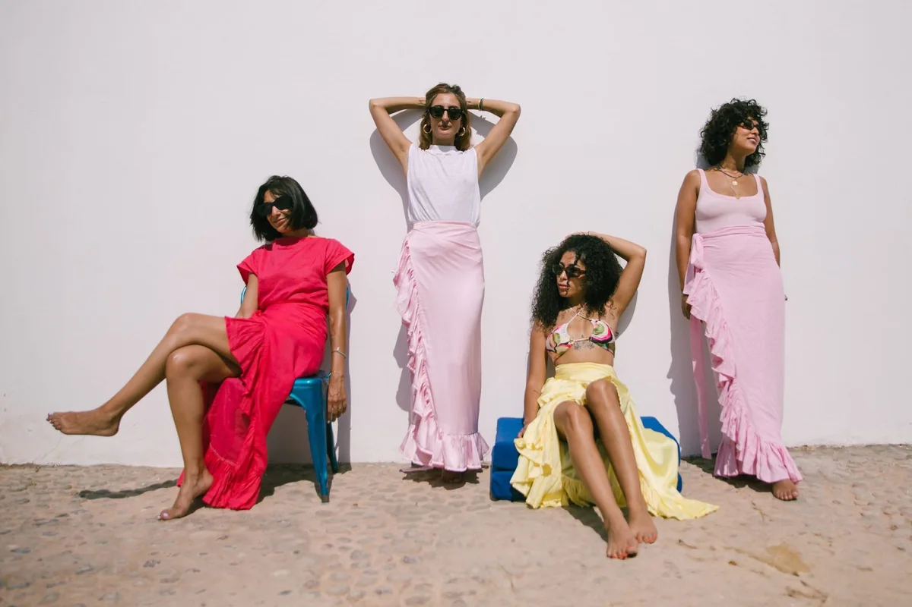
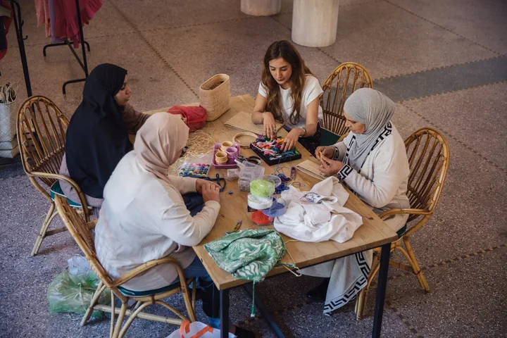
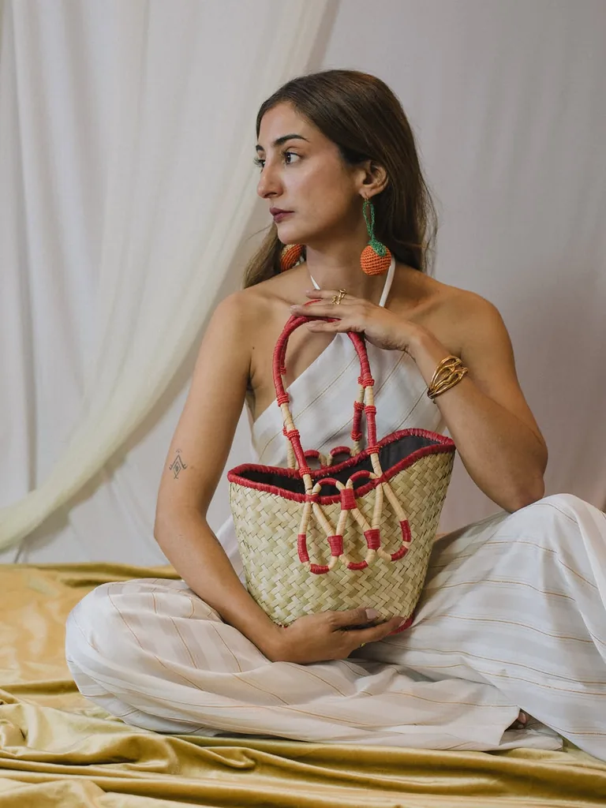

Le vestiaire moderne de MarrakechThe modern wardrobe of MarrakechEl vestuario moderno de MarrakechMarakeş’in modern gardırobuخزانة مراكش العصرية

L’édition YZA du momentThe current YZA editLa selección YZA del momentoGüncel YZA seçkisiاختيارات YZA لهذا الموسم
L’atelier et La SculptureThe atelier and La SculptureEl atelier y La SculptureAtölye ve La Sculptureالمشغل وLa Sculpture


Elles portent YZAThey wear YZAEllas llevan YZAOnlar YZA’yı taşırهن يرتدين YZA
Portées, aimées, réparées.Worn, loved, repaired.Llevadas, queridas, reparadas.Taşınan, sevilen, onarılan.تُرتدى، تُحب، وتُصلح.
Fait à la main à Guéliz, pensé pour voyager.Made by hand in Guéliz, designed to travel.Hecho a mano en Guéliz, pensado para viajar.Guéliz’de elde yapıldı, yolculuk için tasarlandı.صُنع يدوياً في كليز، وصُمم للسفر.
Notre histoireOur storyNuestra historiaHikâyemizحكايتناAvant de choisirBefore choosingAntes de elegirSeçmeden önceقبل الاختيار
Les réponses essentielles.The essential answers.Las respuestas esenciales.Temel yanıtlar.الإجابات الأساسية.
Dans notre atelier au 66 rue Yougoslavie, à Guéliz. Chaque finition est contrôlée pièce par pièce.In our atelier at 66 rue Yougoslavie in Guéliz. Every finish is checked piece by piece.En nuestro atelier del 66 rue Yougoslavie, en Guéliz. Cada acabado se revisa pieza por pieza.Guéliz, 66 rue Yougoslavie’deki atölyemizde. Her bitiş parça parça kontrol edilir.في مشغلنا بشارع يوغوسلافيا 66 في كليز. تُراجع كل لمسة قطعةً قطعة.
Non. Les matières naturelles et le geste manuel créent de légères variations : c’est la signature de la pièce, pas un défaut.No. Natural materials and handwork create subtle variations: they are the piece’s signature, not a defect.No. Los materiales naturales y el trabajo manual crean variaciones sutiles: son la firma de la pieza, no un defecto.Hayır. Doğal malzemeler ve el işi küçük farklılıklar yaratır; bunlar kusur değil parçanın imzasıdır.لا. تُحدث المواد الطبيعية والعمل اليدوي اختلافات دقيقة؛ وهي توقيع القطعة وليست عيباً.
Rapportez-la ou contactez l’atelier. YZA propose la réparation à vie, selon l’état et les matières disponibles.Bring it back or contact the atelier. YZA offers lifetime repair, depending on condition and available materials.Tráela o contacta con el atelier. YZA ofrece reparación de por vida, según el estado y los materiales disponibles.Atölyeye getirin ya da bize ulaşın. YZA, durum ve mevcut malzemelere göre ömür boyu onarım sunar.أعيديها أو تواصلي مع المشغل. تقدم YZA إصلاحاً مدى الحياة بحسب الحالة والمواد المتاحة.